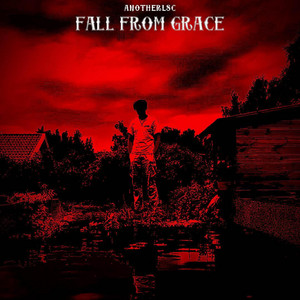

My First Album
Fall From Grace, a story told over the span of 11 songs including an intro and an interlude. The album follows a nameless main protagonist as he finds, struggles and eventually loses the love of his life. The genre of the songs is experimental/ indie with synths and electronic instruments.